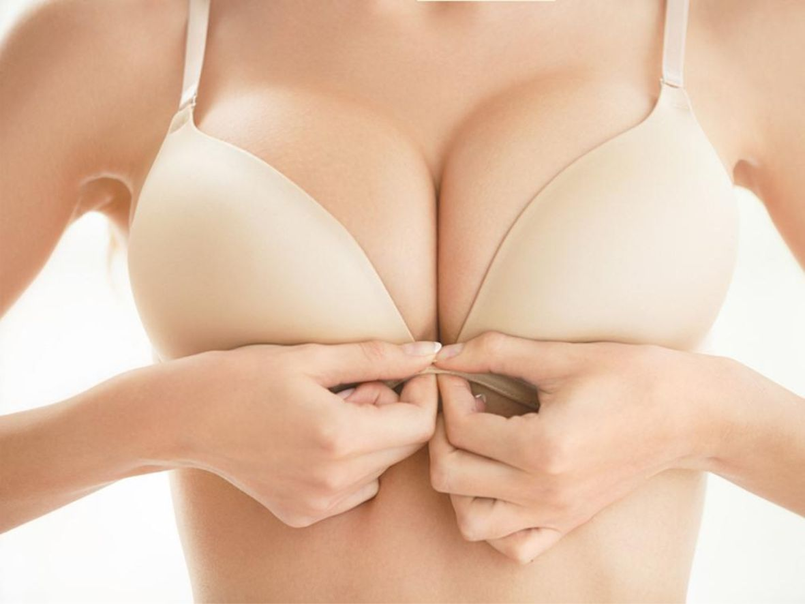

A cirurgia de aumento de mama utiliza implantes para dar volume aos seios ou restaurar o volume mamário perdido após perda de peso ou gravidez.
Se você está insatisfeita com o tamanho da sua mama, a cirurgia de aumento de mama é uma opção a ser considerada. O aumento de mama pode:
• Aumentar o tamanho e projeção de seus seios,
• Melhorar o equilíbrio de seu corpo,
• Melhorar a sua autoestima e autoconfiança.
Os implantes também podem ser utilizados para reconstruir a mama após a mastectomia.